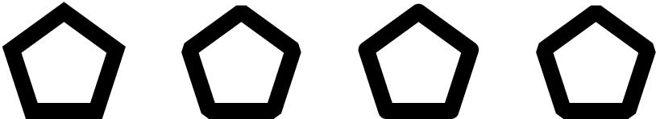
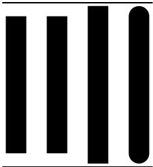

10 Drawing Options
This chapter describes the drawing options that are used by CLIM's drawing
functions, and the relationship between drawing options, sheets, and mediums.
These drawing options control various aspects of the drawing process, and can be
provided as keyword arguments to all of the drawing functions.
10.1 Medium Components
Medium objects contain components that correspond to the drawing options; when
no value for a drawing option is explicitly provided to a drawing function, it
is taken from the medium. These values can be directly queried or modified
using accessors defined on the sheet or medium. They can also be temporarily
bound within a dynamic context using with-drawing-options ,
with-text-style , and related forms.
setf of one of these components while it is temporarily bound (via
with-drawing-options , for instance) takes effect immediately but is undone
when the dynamic binding context is exited.
In systems that support multiple processes, the consequences are unspecified if
one process reads or writes a medium component that is temporarily bound by
another process.
The following functions read and write components of a medium related to drawing
options. While these functions are defined for mediums, they can also be called
on sheets support the sheet output protocol and on streams that output to such
sheets. All classes that support the medium protocol must implement methods for
these generic functions. Often, a sheet class that supports the output protocol
will implement a ``trampoline'' method that passes the operation on to
sheet-medium of the sheet.
| medium-foreground | medium | [Generic function] |
| medium-background | medium | [Generic function] |
Returns the foreground and background inks (which are designs) for the
medium medium , respectively. The foreground ink is the default ink
used when drawing. The background ink is the ink used when erasing. See
Chapter Drawing in Color for a more complete description of designs.
Any indirect inks are resolved against the foreground and background at the time
a design is rendered.
| (setf medium-foreground) | design medium | [Generic function] |
| (setf medium-background) | design medium | [Generic function] |
Sets the foreground and background ink, respectively, for the medium medium to design . You may not set medium-foreground or
medium-background to an indirect ink.
design is an unbounded design. If the background design is not completely
opaque at all points, the consequences are unspecified.
Changing the foreground or background of a sheet that supports output recording
causes the contents of the stream's viewport to be erased and redrawn using the
new foreground and background.
| medium-ink | medium | [Generic function] |
The current drawing ink for the medium medium , which can be any
design. The drawing functions draw with the color and pattern that this
specifies. See Chapter Drawing in Color for a more complete description of inks.
The :ink drawing option temporarily changes the value of medium-ink .
| (setf medium-ink) | design medium | [Generic function] |
Sets the current drawing ink for the medium medium to design .
design is as for medium-foreground , and may be an indirect ink as
well.
| medium-transformation | medium | [Generic function] |
The current user transformation for the medium medium . This
transformation is used to transform the coordinates supplied as arguments to
drawing functions to the coordinate system of the drawing plane. See
Chapter Affine Transformations for a complete description of transformations. The
:transformation drawing option temporarily changes the value of
medium-transformation .
| (setf medium-transformation) | transformation medium | [Generic function] |
Sets the current user transformation for the medium medium to the
transformation transformation .
| medium-clipping-region | medium | [Generic function] |
The current clipping region for the medium medium . The drawing
functions do not affect the drawing plane outside this region. The
:clipping-region drawing option temporarily changes the value of
medium-clipping-region .
The clipping region is expressed in user coordinates.
| (setf medium-clipping-region) | region medium | [Generic function] |
Sets the current clipping region for the medium medium to
region . region must be a subclass of area . Furthermore, some
implementations may signal an error if the clipping region is not a rectangle or
a region set composed entirely of rectangles.
| medium-line-style | medium | [Generic function] |
The current line style for the medium medium . The line and arc
drawing functions render according to this line style. See
Section Line Styles for a complete description of line styles. The
:line-style drawing option temporarily changes the value of
medium-line-style .
| (setf medium-line-style) | line-style medium | [Generic function] |
Sets the current line style for the medium medium to the line
style line-style .
| medium-default-text-style | medium | [Generic function] |
The default text style for the medium medium .
medium-default-text-style will return a fully specified text style, unlike
medium-text-style , which may return a text style with null components. Any
text styles that are not fully specified by the time they are used for rendering
are merged against medium-default-text-style using merge-text-styles .
The default value for medium-default-text-style for any medium is
*default-text-style* .
See Chapter Text Styles for a complete description of text styles.
| (setf medium-default-text-style) | text-style medium | [Generic function] |
Sets the default text style for the medium medium to the text
style text-style . text-style must be a fully specified text style.
Some CLIM implementations may arrange to erase and redraw the output on an
output recording stream when the default text style of the stream is changed.
Implementations that do this must obey the proper vertical spacing for output
streams, and must reformat tables, graphs, and so forth, as necessary. Because
of the expense of this operation, CLIM implementations are not required to
support this.
| medium-text-style | medium | [Generic function] |
The current text style for the medium medium . The text drawing
functions, including ordinary stream output, render text as directed by this
text style merged against the default text style. This controls both graphical
text (such as that drawn by draw-text* ) and stream text (such as that
written by write-string ). See Chapter Text Styles for a complete
description of text styles. The :text-style drawing option temporarily
changes the value of medium-text-style .
| (setf medium-text-style) | text-style medium | [Generic function] |
Sets the current text style for the medium medium to the text
style text-style . text-style need not be a fully merged text
style.
| medium-current-text-style | medium | [Generic function] |
The current, fully merged text style for the medium medium . This
is the text style that will be used when drawing text output, and is the result
of merging medium-text-style against medium-default-text-style .
10.2 Drawing Option Binding Forms
| with-drawing-options | (medium &rest drawing-options) &body body | [Macro] |
Binds the state of the medium designated by medium to correspond to
the supplied drawing options, and executes the body with the new drawing options
specified by drawing-options in effect. Each option causes binding of the
corresponding component of the medium for the dynamic extent of the body. The
drawing functions effectively do a with-drawing-options when drawing option
arguments are supplied to them.
medium can be a medium, a sheet that supports the sheet output protocol,
or a stream that outputs to such a sheet. The medium argument is not
evaluated, and must be a symbol that is bound to a sheet or medium. If
medium is t , *standard-output* is used. body may have
zero or more declarations as its first forms.
with-drawing-options must be implemented by expanding into a call to
invoke-with-drawing-options , supplying a function that executes body as the continuation argument to invoke-with-drawing-options . The exact
behavior of this macro is described under invoke-with-drawing-options .
| invoke-with-drawing-options | medium continuation &rest drawing-options | [Generic function] |
Binds the state of the medium medium to correspond to the supplied
drawing options, and then calls the function continuation with the new
drawing options in effect. continuation is a function of one argument,
the medium; it has dynamic extent. drawing-options is a list of
alternating keyword-value pairs, and must have even length. Each option in
drawing-options causes binding of the corresponding component of the
medium for the dynamic extent of the body.
medium can be a medium, a sheet that supports the sheet output protocol,
or a stream that outputs to such a sheet. All classes that obey the medium
protocol must implement a method for invoke-with-drawing-options .
The drawing options can be any of the following, plus any of the suboptions for
line styles and text styles. The default value specified for a drawing option
is the value to which the corresponding component of a medium is normally
initialized.
A design that will be used as the ink for drawing operations. The drawing
functions draw with the color and pattern that this specifies. The default
value is +foreground-ink+ . See Chapter Drawing in Color for a complete
description of inks.
The :ink ink drawing option temporarily changes the value of
(medium-ink medium ) to ink , replacing the previous ink; the
new and old inks are not combined in any way.
This transforms the coordinates used as arguments to drawing functions to the
coordinate system of the drawing plane. The default value is
+identity-transformation+ . See Chapter Affine Transformations for a complete
description of transformations.
The :transformation xform drawing option temporarily changes the
value of(medium-transformation medium ) to
(compose-transformations (medium-transformation medium ) xform ) .
The drawing functions do not affect the drawing plane outside this region. The
clipping region must be an area . Furthermore, some implementations might
signal an error if the clipping region is not a rectangle or a region set
composed entirely of rectangles. Rendering is clipped both by this clipping
region and by other clipping regions associated with the mapping from the target
drawing plane to the viewport that displays a portion of the drawing plane. The
default is +everywhere+ , or in other words, no clipping occurs in the
drawing plane, only in the viewport.
The :clipping-region region drawing option temporarily changes the
value of (medium-clipping-region medium ) to (region-intersection
(transform-region (medium-transformation medium ) region )
(medium-clipping-region medium )) . If both a clipping region and a
transformation are supplied in the same set of drawing options, the clipping
region argument is transformed by the newly composed transformation before
calling region-intersection .
Issue: DCPL
A better explanation is needed. It does the right thing, but
it's hard to tell that from this description. That is, the clipping region is
expressed in user coordinates.
The line and arc drawing functions render according to this line style. The
line style suboptions and default are defined in Section Line Styles .
The :line-style ls drawing option temporarily changes the value of
(medium-line-style medium ) to ls , replacing the previous line
style; the new and old line styles are not combined in any way.
If line style suboptions are supplied, they temporarily change the value of
(medium-line-style medium ) to a line style constructed from the
specified suboptions. Components not specified by suboptions are defaulted from
the :line-style drawing option, if it is supplied, or else from the
previous value of (medium-line-style medium ) . That is, if both the
:line-style option and line style suboptions are supplied, the suboptions
take precedence over the components of the :line-style option.
The text drawing functions, including ordinary stream output, render text as
directed by this text style merged against the default text style. The default
value has all null components. See Chapter Text Styles for a complete
description of text styles, including the text style suboptions.
The :text-style ts drawing option temporarily changes the value of
(medium-text-style medium ) to (merge-text-styles ts (medium-text-style medium )) .
If text style suboptions are supplied, they temporarily change the value of
(medium-text-style medium ) to a text style constructed from the
specified suboptions, merged with the :text-style drawing option if it is
specified, and then merged with the previous value of (medium-text-style
medium ) . That is, if both the :text-style option and text style
suboptions are supplied, the suboptions take precedence over the components of
the :text-style option.
10.2.1 Transformation ``Convenience'' Forms
The following three functions are no different than using
with-drawing-options with the :transformation keyword argument
supplied. However, they are sufficiently useful that they are provided as a
convenience to programmers.
In order to preserve referential transparency, these three forms apply the
translation, rotation, or scaling transformation first, then the rest of the
transformation from (medium-transformation medium ) . That is, the
following two forms would return the same transformation (assuming that the
medium's transformation in the second example is the identity transformation):
(compose-transformations
(make-translation-transformation dx dy)
(make-rotation-transformation angle))
(with-translation (medium dx dy)
(with-rotation (medium angle)
(medium-transformation medium)))
| with-translation | (medium dx dy) &body body | [Macro] |
Establishes a translation on the medium designated by medium that
translates by dx in the x direction and dy in the y direction,
and then executes body with that transformation in effect.
dx and dy are as for make-translation-transformation .
The medium argument is not evaluated, and must be a symbol that is bound
to a sheet or medium. If medium is t , *standard-output* is
used. body may have zero or more declarations as its first forms.
| with-scaling | (medium sx &optional sy origin) &body body | [Macro] |
Establishes a scaling transformation on the medium designated by
medium that scales by sx in the x direction and sy in the
y direction, and then executes body with that transformation in effect.
If sy is not supplied, it defaults to sx . If origin is
supplied, the scaling is about that point; if it is not supplied, it defaults to
(0,0).
sx and sy are as for make-scaling-transformation .
The medium argument is not evaluated, and must be a symbol that is bound
to a sheet or medium. If medium is t , *standard-output* is
used. body may have zero or more declarations as its first forms.
| with-rotation | (medium angle &optional origin) &body body | [Macro] |
Establishes a rotation on the medium designated by medium that
rotates by angle , and then executes body with that transformation in
effect. If origin is supplied, the rotation is about that point; if it is
not supplied, it defaults to (0,0).
angle and origin are as for make-rotation-transformation .
The medium argument is not evaluated, and must be a symbol that is bound
to a sheet or medium. If medium is t , *standard-output* is
used. body may have zero or more declarations as its first forms.
| with-identity-transformation | (medium) &body body | [Macro] |
Establishes the identity transformation on the medium designated
by medium .
The medium argument is not evaluated, and must be a symbol that is bound
to a sheet or medium. If medium is t , *standard-output* is
used. body may have zero or more declarations as its first forms.
10.2.2 Establishing Local Coordinate Systems
| with-local-coordinates | (medium &optional x y) &body body | [Macro] |
Binds the dynamic environment to establish a local coordinate system on the
medium designated by medium with the origin of the new coordinate
system at the position (x,y). The ``directionality'' of the coordinate system
is otherwise unchanged. x and y are real numbers, and both default
to 0.
The medium argument is not evaluated, and must be a symbol that is bound
to a sheet or medium. If medium is t , *standard-output* is
used. body may have zero or more declarations as its first forms.
| with-first-quadrant-coordinates | (medium &optional x y) &body body | [Macro] |
Binds the dynamic environment to establish a local coordinate system on the
medium designated by medium with the positive x axis extending to
the right and the positive y axis extending upward, with the origin of the new
coordinate system at the position (x,y). x and y are real
numbers, and both default to 0.
The medium argument is not evaluated, and must be a symbol that is bound
to a sheet or medium. If medium is t , *standard-output* is
used. body may have zero or more declarations as its first forms.
10.3 Line Styles
A line or other path is a one-dimensional object. However in order to be
visible, the rendering of a line must occupy some non-zero area on the display
hardware. A line style represents the advice of CLIM to the rendering
substrate on how to perform the rendering.
| line-style | [Protocol Class] |
The protocol class for line styles.
If you want to create a new class that behaves like a line style, it should be a subclass of line-style. Subclasses of line-style must obey the line style protocol.| line-style-p | object | [Predicate] |
Returns true if object is a line style , otherwise returns
false .
| standard-line-style | [Class] |
An instantiable class that implements line styles. A subclass of
line-style . This is the class that make-line-style instantiates.
Members of this class are immutable. | make-line-style | &key unit thickness joint-shape cap-shape dashes | [Function] |
Returns an object of class standard-line-style with the supplied
characteristics. The arguments and their default values are described in
Section Line Style Protocol and Line Style Suboptions .
10.3.1 Line Style Protocol and Line Style Suboptions
Each of these suboptions has a corresponding reader that can be used to extract
a particular component from a line style. The generic functions decribed below
comprise the line style protocol; all subclasses of line-style must
implement methods for these generic functions.
| line-style-unit | line-style | [Generic function] |
Gives the unit used for measuring line thickness and dash pattern length for the
line style. Possible values are :normal , :point , or :coordinate .
The meaning of these options is:
- :normal ---thicknesses and lengths are given in a relative measure in
terms of the usual or ``normal'' line thickness. The normal line thickness is
the thickness of the ``comfortably visible thin line'',
1 which is a property of the underlying rendering substrate. This is the default.
- :point ---thicknesses and lengths are given in an absolute measure in
terms of printer's points (approximately 1/72 of an inch).
2
- :coordinate ---this means that the same units should be used for line
thickness as are used for coordinates. In this case, the line thickness is
scaled by the medium's current transformation, whereas :normal and
:point do not scale the line thickness.
| line-style-thickness | line-style | [Generic function] |
The thickness, in the units indicated by line-style-unit , of the lines or
arcs drawn by a drawing function. The thickness must be a real number. The
default is 1, which combined with the default unit of :normal , means that
the default line drawn is the ``comfortably visible thin line''.
| :line-joint-shape | [Option] |
| line-style-joint-shape | line-style | [Generic function] |
Specifies the shape of joints between segments of unfilled figures. The
possible shapes are :miter , :bevel , :round , and :none ; the
default is :miter . Note that the joint shape is implemented by the host
window system, so not all platforms will necessarily fully support it.

Figure 10.1: Line joint shapes.
| line-style-cap-shape | line-style | [Generic function] |
Specifies the shape for the ends of lines and arcs drawn by a drawing function,
one of :butt , :square , :round , or :no-end-point ; the default
is :butt . Note that the cap shape is implemented by the host window
system, so not all platforms will necessarily fully support it.

Figure 10.2: Line cap shapes.
| line-style-dashes | line-style | [Generic function] |
Controls whether lines or arcs are drawn as dashed figures, and if so, what the
dashing pattern is. Possible values are:
- nil ---lines are drawn solid, with no dashing. This is the default.
- t ---lines are drawn dashed, with a dash pattern that is unspecified
and may vary with the rendering engine. This allows the underlying display
substrate to provide a default dashed line for the programmer whose only
requirement is to draw a line that is visually distinguishable from the default
solid line.
- A sequence---specifies a sequence, usually a vector, controlling the dash
pattern of a drawing function. It is an error if the sequence does not contain
an even number of elements. The elements of the sequence are lengths (as real
numbers) of individual components of the dashed line or arc. The odd elements
specify the length of inked components, the even elements specify the gaps. All
lengths are expressed in the units described by line-style-unit .
(See also make-contrasting-dash-patterns .)
10.3.2 Contrasting Dash Patterns
| make-contrasting-dash-patterns | n &optional k | [Function] |
If k is not supplied, this returns a vector of n dash patterns with
recognizably different appearance. Elements of the vector are guaranteed to be
acceptable values for :dashes , and do not include nil , but their class
is not otherwise specified. The vector is a fresh object that may be modified.
If k is supplied, it must be an integer between 0 and n -1
(inclusive), in which case make-contrasting-dash-patterns returns the
k 'th dash-pattern rather than returning a vector of dash-patterns.
If the implementation does not have n different contrasting dash patterns,
make-contrasting-dash-patterns signals an error. This will not happen
unless n is greater than eight.
| contrasting-dash-pattern-limit | port | [Generic function] |
Returns the number of contrasting dash patterns that can be rendered on any
medium on the port port . Implementations are encouraged to make
this as large as possible, but it must be at least 8. All classes that obey the
port protocol must implement a method for this generic function.
Notes:
1: In some window systems, the phrase ``thinnest
visible line'' is used. This is not appropriate for CLIM, which intends to be
device independent. (For instance, the thinnest visible line on a 400 d.p.i.
laser printer is a function of the user's viewing distance from the paper.)
Another attribute of a ``normal'' line is that its thickness should
approximately match the stroke thickness of ``normal'' text, where again the
exact measurements are the province of the rendering engine, not of CLIM.
2: This measure was chosen so that CLIM implementors who interface CLIM
to an underlying rendering engine (the window system) may legitimately choose to
make it render as 1 pixel on current (1990) display devices.